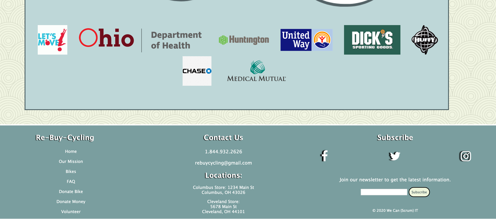
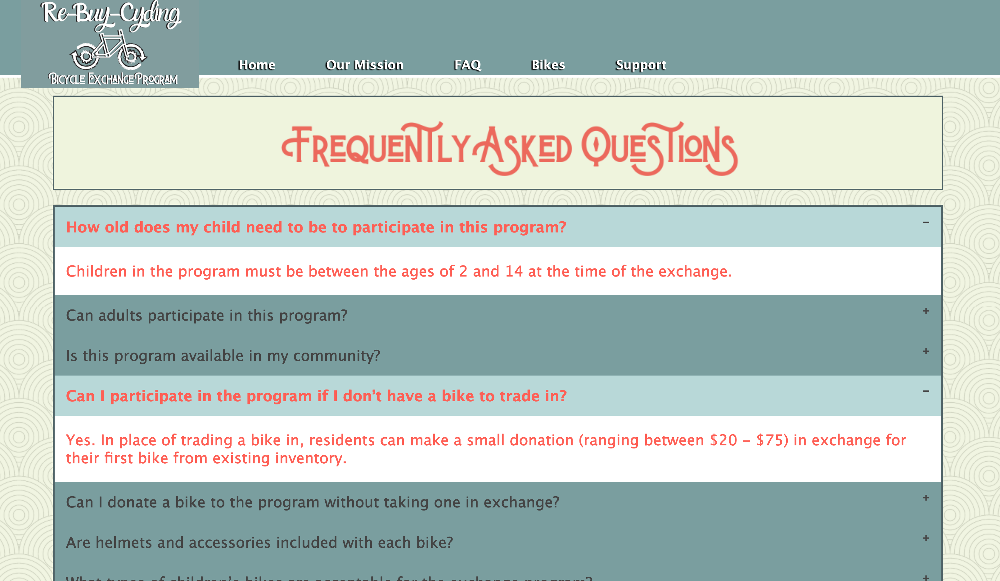
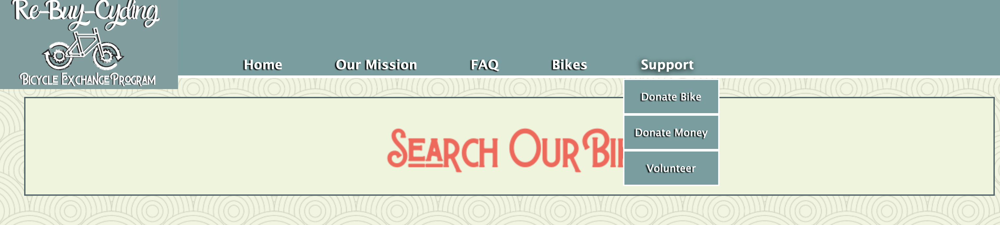
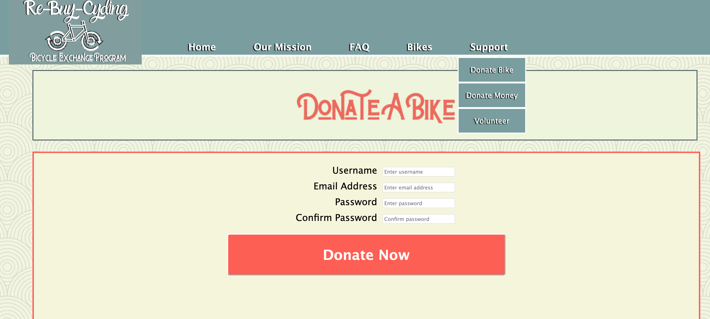
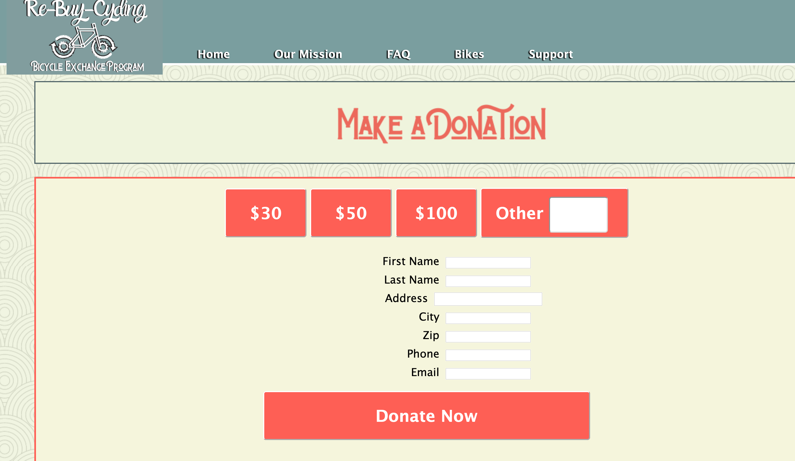
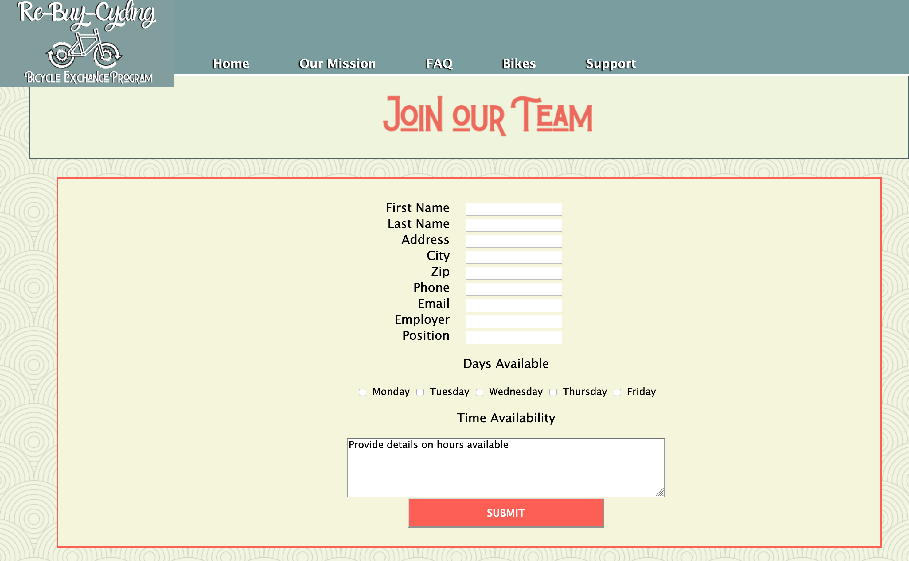
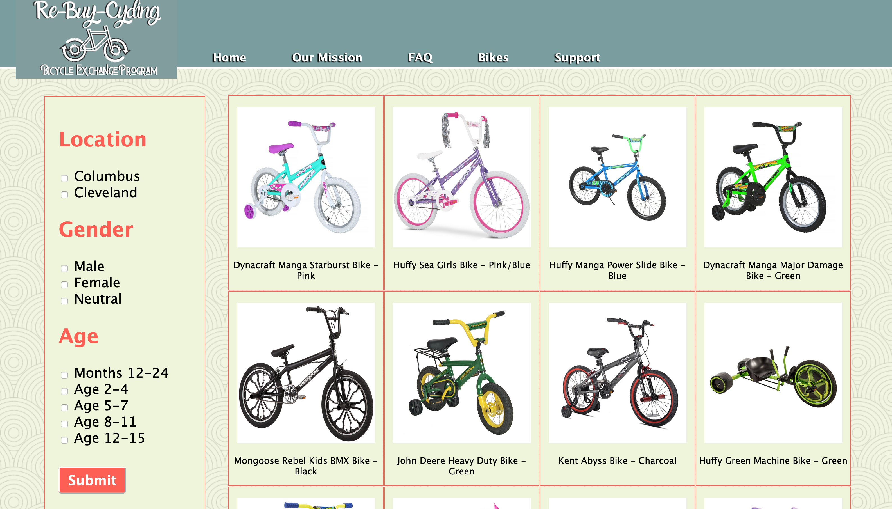
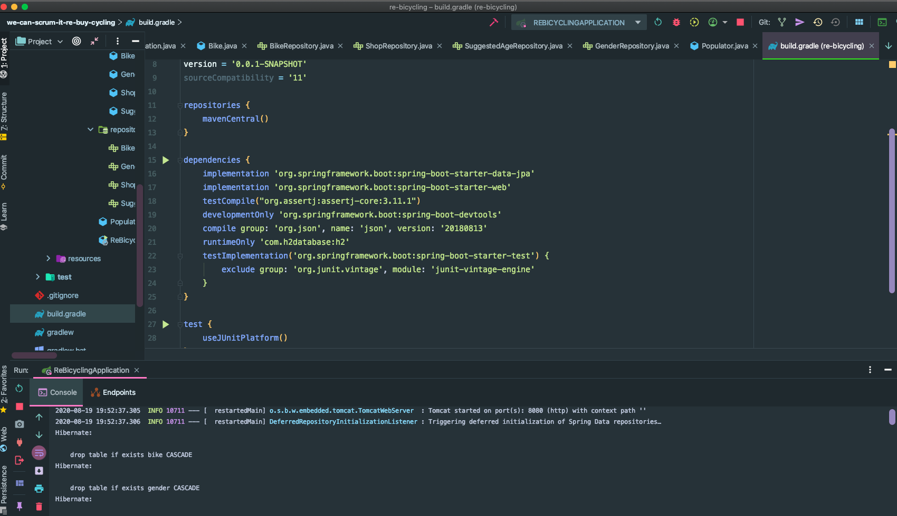
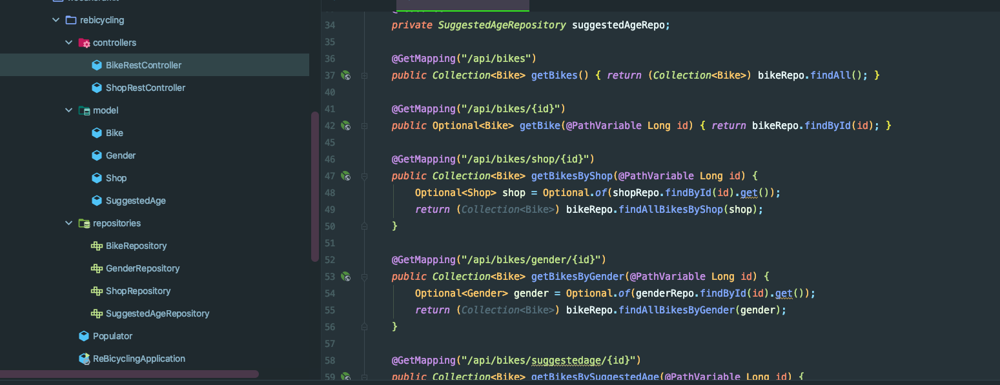

Another team project, however, for this one we decided as a team to pursue a front-end focus and made this a single page application where JavaScript comprised a majority of the code developed for the project. We still used Java and Spring Framework as the backend.
We also used GitHub as our repository, and Google Meets for our team meetings to discuss our Scrum sprints, which is the Agile tool we used for this project.

       